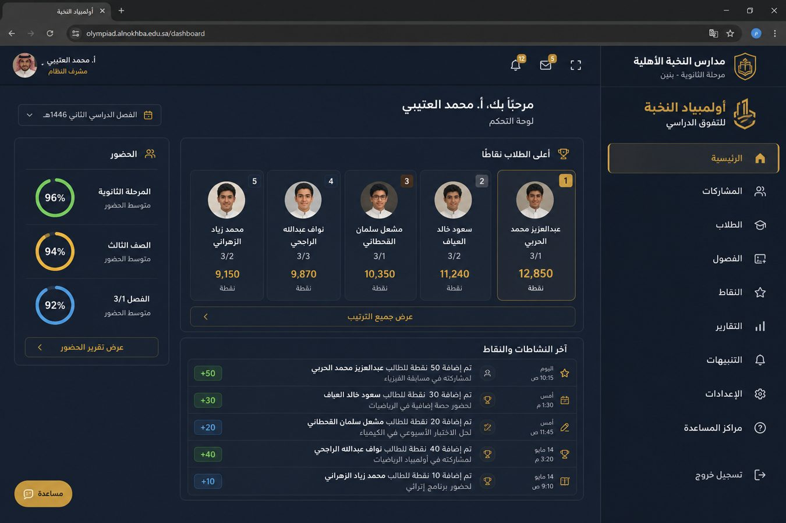

مميز · تعليم
أولمبياد النخبة
المشكلة
التميز داخل المدرسة كان مكافآت شفهية ونقاط غير متسقة. الطالب وولي الأمر لا يريان أثر الحضور أو المشاركة إلا في آخر الفصل.
دوري
صممت وبنيت المنصة كاملة: أدوار (إدارة، معلم، طالب، ولي أمر)، نقاط، حضور، اختبارات، وتقارير.
القرارات
- مصدر حقيقة واحد للنقاط بدل جداول منفصلة لكل معلم.
- صلاحيات حسب الدور حتى لا يرى ولي الأمر بيانات فصل غيره.
- واتساب عندما يجب أن تصل النتيجة فورًا، لا كقناة تشغيل أساسية.
النتيجة
مسار يومي موحّد في مدارس نخبة الشمال: النقاط ظاهرة، والحضور جزء من التميز لا ورقة جانبية.